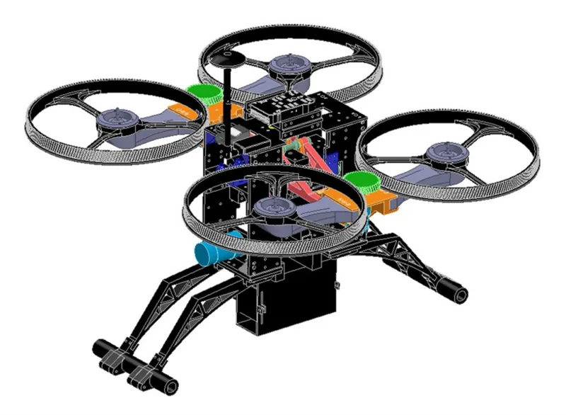
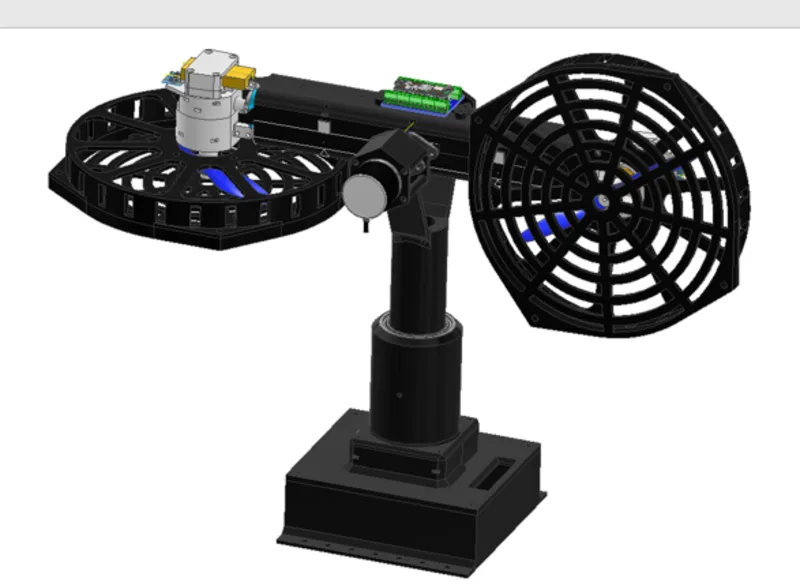
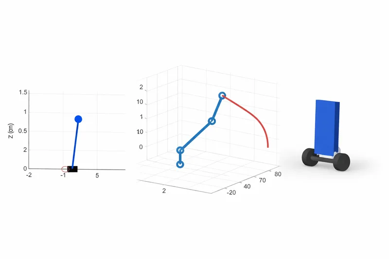

Projects
Selected projects in robotics and control that I've particularly enjoyed developing. If you have questions about any of these, or would like to discuss related ideas, I'd be glad to connect. I also welcome collaborative opportunities and constructive feedback.

Actuated Perception for Humanoid Robots (Caltech SURF)
At Caltech's AMBER Lab, I designed and fabricated a 2-DOF pan-tilt head for a Unitree G1 humanoid that decouples camera orientation from body orientation, then validated it in simulation on two tasks: safe obstacle-avoidance tracking with an MPC and CBF-QP safety filter, and a precision wall-kicking task where a learned policy decides when and where to kick, sustaining a continuous 8-kick rally from onboard perception alone.

ATMO: Hybrid Ground-Aerial Robotic Prototype
A course-based prototype conceptually inspired by the ATMO morphobot architecture, exploring how a single platform might transition between ground support and quadrotor flight. My focus was the mechanical system architecture, CAD modeling, and structural design, followed by fabrication and preliminary field testing.

Nonlinear Modeling and Control of a Bicopter Platform
A deep dive into the nonlinear dynamics of a 2-DoF bicopter, derived from first principles and evaluated against LQR, Lyapunov-based, and feedback-linearizing controllers. An Extended Kalman Filter handles state estimation under measurement noise, with a separate embedded prototype exploring real-time MPC deployment on an Arduino.

Advanced Control and Robotics Studies
Four independent simulation studies spanning reduced-order bipedal locomotion (ALIP), constrained inverse kinematics via QP and nonlinear programming, trajectory optimization by direct collocation, and a self-balancing robot modeled in Simscape Multibody.